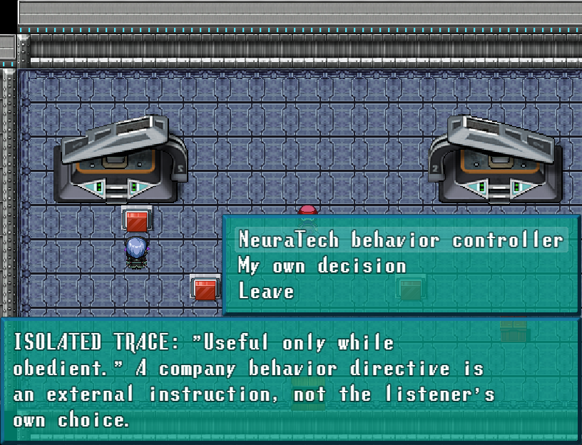
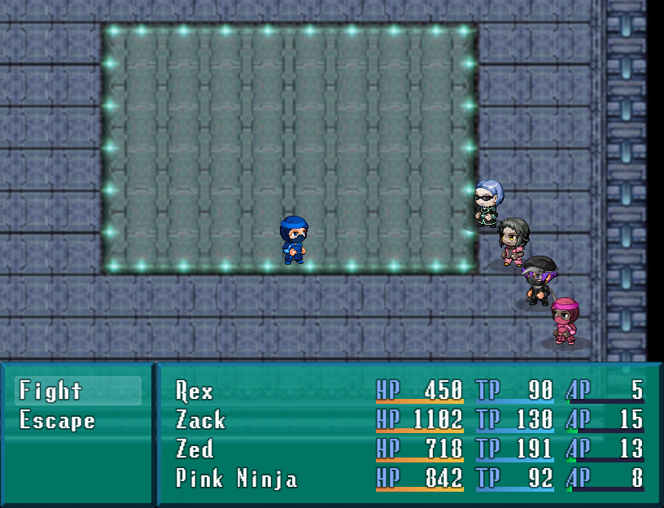
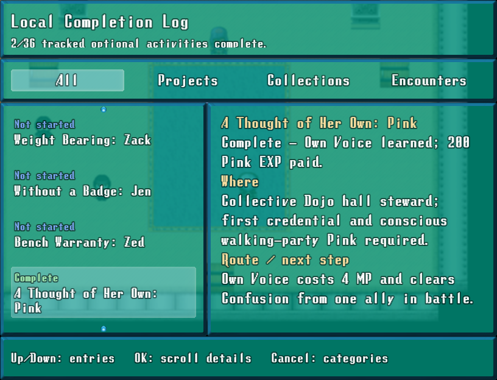

Pink's companion chapter starts at the Collective Dojo hall steward after her recruitment and the first credential. Trace a corporate directive at the care-ward console or win a separate safe rehearsal battle. Return for 200 personal EXP and Own Voice: 4 MP to clear one ally's Confusion in battle.
The original first trial stays separate. A15 remains in progress for other companions.
32px and 3×, sampled directly from IconSet cell2129. One complete isolated source, all alpha preserved, no grid splitting or component deletion.
Game captures below show the 816 × 624 game view, without browser margins. Open an image for its full resolution.


